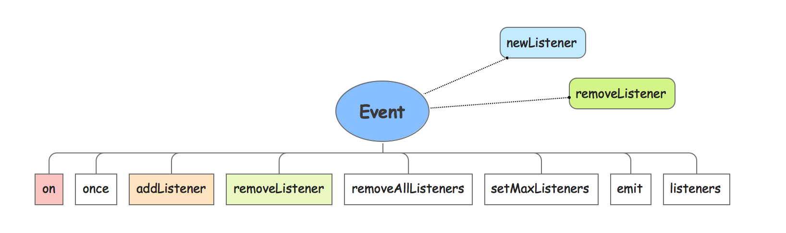

1.0 EventEmitter介绍 Node中的event模块实现了事件处理相关功能，在该模块中定义了EventEmitter类 。
在Node中，所有可能触发事件的对象都是继承了EventEmitter类 的子类的实例对象，该类定义了诸多方法，譬如添加事件监听和移除事件监听以及自动触发事件等(通过下面的打印可以发现，这些方法均定义在原型对象上面)。
1 2 3 4 5 6 7 8 9 10 11 12 13 14 15 16 17 18 19 20 21 22 23 24 25 26 27 28 29 30 wendingding$ node > console .dir(events,{showHidden :true ,colors :true ,depth :1 }) { [Function : EventEmitter] [length]: 0 , [name]: 'EventEmitter' , [prototype]: EventEmitter { [constructor ]: [Circular ], domain : undefined , _events : undefined , _maxListeners : undefined , setMaxListeners : [Object ], getMaxListeners : [Object ], emit : [Object ], addListener : [Object ], on : [Object ], prependListener : [Object ], once : [Object ], prependOnceListener : [Object ], removeListener : [Object ], removeAllListeners : [Object ], listeners : [Object ], listenerCount : [Object ], eventNames : [Object ] }, EventEmitter : [Circular ], usingDomains : true , defaultMaxListeners : [Getter /Setter ], init : { [Function ] [length]: 0 , [name]: '' , [prototype]: [Object ] }, listenerCount : { [Function ] [length]: 2 , [name]: '' , [prototype]: [Object ] } }
EventEmitter结构说明
上面的代码是在REPL环境中直接通过console.dir方法来打印events整个模块的输出。为了方便理解，我这里另外再提供一份EventEmitter构造函数的具体实现作为对照和参考。
1 2 3 4 5 function EventEmitter (this ); }EventEmitter.usingDomains = false ; EventEmitter.prototype._events = undefined ; EventEmitter.prototype._eventsCount = 0 ; EventEmitter.prototype._maxListeners = undefined ;
events模块中的EventEmitter 指向的是模块自身。
1 2 3 wendingding$ node > events == events.EventEmitter true
EventEmitter 构造函数身上有个比较重要的静态方法即init方法，该方法主要用来根据条件执行初始化操作，所谓的初始化具体点讲其实就是设置_events、_maxListeners，下面列出该方法的具体实现
1 2 3 4 5 6 7 8 EventEmitter.init = function ( if (this ._events === undefined || this ._events === Object .getPrototypeOf(this )._events) { this ._events = Object .create(null ); this ._eventsCount = 0 ; } this ._maxListeners = this ._maxListeners || undefined ; };
EventEmitter 的defaultMaxListeners属性内部实现了Getter和Setter方法，该属性用来设置和获取指定事件可以绑定的最大事件处理函数数量，该属性默认值为10。对于默认事件绑定数量，我们可以通过在REPL环境中直接打印events.defaultMaxListeners来进行查看。此外，在EventEmitter 原型对象上面，提供了setMaxListeners和getMaxListeners方法来对_maxListeners属性进行获取和设置。

2.0 Event相关方法 前文对events模块中的EventEmitter构造函数 进行了简单介绍，接下来将主要说明具体事件监听绑定、移除和触发等相关的方法。
事件的监听(绑定)
当需要给指定对象添加事件监听(绑定事件处理函数)的时候，可以使用EventEmitter原型对象中的on方法或者是addListener方法，这两个方法的区别仅仅在于方法名，内部的实现一模一样，均调用events模块中的_addListener方法来实现。
_addListener方法核心过程
① 验证监听器是否为函数对象。newListener的事件类型，造成递归调用。
这里先介绍事件监听(绑定)相关方法的语法，然后给出简短示例。
EventEmitterInstance.on(event,listener)EventEmitterInstance.addListener(event,listener)
参数说明 on方法和addListener方法接受两个参数，其中event代表的是事件的类型(事件的名称，譬如data、request等)，而listener参数代表的是侦听器(事件处理函数)。
1 2 3 4 5 6 7 8 9 10 11 12 13 14 15 16 17 18 19 var http = require ("http" );var server = http.createServer();server.addListener("request" ,function (req,res ) console .log("request--事件被触发" ); console .log("req.url:" ,req.url); res.end(); }); server.listen(4001 ,"127.0.0.1" );
切换到当前所在目录，在终端中通过node demo.js命令执行上面的代码开启服务器端口监听，然后在浏览器中输入http://127.0.0.1:4001 地址，能够得到下面的打印输出：
1 2 3 4 5 wendingding$ node demo.js request--事件被触发 req.url: / request--事件被触发 req.url: /favicon.ico
备注 在给指定对象绑定事件监听的时候，支持给某类型的事件(譬如request)绑定多个处理函数，默认最多可以绑定10个且支持给指定对象绑定多种类型的事件监听(譬如request事件、end事件等)。绑定处理函数的数量可以通过getMaxListeners和setMaxListeners方法来操作。
1 2 3 4 5 6 7 8 9 10 11 12 13 14 var events = require ("events" );console .log("defaultMaxListeners==" ,events.defaultMaxListeners);console .log("默认getMaxListeners ==" ,rs.getMaxListeners());rs.setMaxListeners(20 ) console .log("设置getMaxListeners == 20" );console .log("最新getMaxListeners ==" ,rs.getMaxListeners());defaultMaxListeners== 10 默认getMaxListeners == 10 设置getMaxListeners == 20 最新getMaxListeners == 20
除了上面介绍的on方法和addListener方法之外，once方法也能用来给指定的对象添加事件监听(绑定事件处理函数)，区别在于once方法当事件处理函数执行一次后绑定就会立即被解除，也就是该事件处理函数只会被执行一次。下面给出具体语法和简短示例：
EventEmitterInstance.once(event,listener)
1 2 3 4 5 6 7 8 9 10 11 12 13 14 15 16 17 18 19 20 21 22 23 24 25 26 27 var fs = require ("fs" );var rs = fs.createReadStream("Hi.text" ,{highWaterMark :10 });var data = [];rs.addListener("data" ,function (chunk ) console .log("data...事件被触发" ); data.push(chunk); }) rs.once("end" ,function ( console .log("end····事件被触发" ); var buf = Buffer.concat(data); console .log(buf.toString()); }); wendingding$ node once.js data...事件被触发 data...事件被触发 data...事件被触发 data...事件被触发 end····事件被触发 文顶顶：嗨，很高兴遇见你！
移除事件监听(解绑)
若需要解除指定对象的事件侦听，则可使用移除事件相关的方法。EventEmitter提供了removeListener方法和removeAllListeners方法来进行解绑操作，listeners方法可以获取当前对象中指定事件绑定的所有处理函数。下面先列出语法然后给出简短代码示例：
EventEmitterInstance.listeners(event)EventEmitterInstance.removeListener(event,listener)EventEmitterInstance.removeAllListeners(event)
1 2 3 4 5 6 7 8 9 10 11 12 13 14 15 16 17 18 19 20 21 22 23 24 25 26 27 28 29 30 31 32 33 34 35 36 37 38 39 40 41 var http = require ("http" );var server = http.createServer();function requestHandleOne (req,res ) console .log("url == " ,req.url); console .log("request1····事件被触发" ); res.end(); } function requestHandleTwo (req,res ) console .log("url == " ,req.url); console .log("request2····事件被触发" ); res.end(); } server.addListener("request" ,requestHandleOne) server.addListener("request" ,requestHandleTwo) server.listen(4002 ,"127.0.0.1" ); console .log("request事件处理函数列表：" );var handleList = server.listeners("request" );for (var key in handleList){ console .log("事件处理函数：" ,handleList[key].name); } console .log("移除前：" ,server.listenerCount("request" ));server.removeListener("request" ,requestHandleOne); console .log("移除后：" ,server.listenerCount("request" ));var events = require ("events" );var server_request_listenerCount = events.EventEmitter.listenerCount(server,"request" )console .log("server对象中request事件的侦听数量：" ,server_request_listenerCount);
代码说明
在上面的代码中我们首先创建了服务器sever对象，然后开启了服务器4002端口监听，并使用方法addListener为request事件添加两个侦听(分别是requestHandleOne和requestHandleTwo)函数。
server.listeners("request")函数用来获取sever对象上所有request事件处理函数列表。server.listenerCount("request")函数用来获取sever对象上所有request事件处理函数的数量。
此外，在events模块的EventEmitter构造函数 身上拥有一个listenerCount方法，该方法接收两个参数(对象，事件)以获取特定对象身上指定事件处理函数的数量。运行JavaScript代码，并在浏览器中访问：
1 2 3 4 5 6 7 8 9 10 11 wendingding$ node removeListener.js request事件处理函数列表： 事件处理函数： requestHandleOne 事件处理函数： requestHandleTwo 移除前： 2 移除后： 1 server对象中request事件的侦听数量： 1 url == / request2····事件被触发 url == /favicon.ico request2····事件被触发